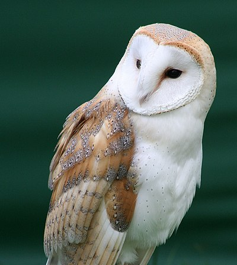

L’aye-aye, Daubentonia madagascariensis en latin, est une espèce de lémurien endémique de Madagascar.
C’est l’un des primates les plus distinctifs au monde en raison de son apparence unique et de son comportement inhabituel.
Il possède de longues griffes, des oreilles en forme de pagaie et une queue touffue.
Il est capable de localiser les insectes dans les arbres en utilisant son long doigt du milieu pour frapper la surface de l’arbre et son oreille pour localiser l’endroit exact où se trouve la proie. Une fois qu’il a localisé un insecte, il utilise ses longues griffes pour saisir et extraire la proie.
Pour observer les aye-ayes à Madagascar, il faut se rendre dans la Réserve naturelle de Betampona, le parc national de Masoala ou celui de Zahamena.
Des yeux jaunes, une fourrure sombre, des grands doigts effilés et des longues dents confèrent à l’aye-aye une apparence peu avenante. Considéré comme une créature maléfique dans la culture populaire malgache, le lémurien se retrouve aujourd'hui en danger d'extinction. Rencontre avec un animal rare qui, bien que petit, est le plus grand primate nocturne du monde !
À quoi ressemble l’aye-aye ?
Le lémurien malgache revêt une fourrure brune excepté sur la tête et le dos qui virent au blanc. Doté d’une longue et épaisse queue, l’aye-aye se distingue surtout par de grandes oreilles arrondies et de gros yeux jaunes cerclés de noir. Une autre caractéristique repose sur ses doigts extrêmement fins et longs dont une adaptation particulière de la troisième phalange plus allongée que les autres. Les mains de l’aye-aye se prolongent par des griffes pointues et tranchantes. Chez cette espèce, il n'existe pas de dimorphisme sexuel entre le mâle et la femelle.
À quelle famille appartient l’aye-aye ?
Sa ressemblance avec le singe ne saute pas aux yeux et pourtant, l'aye-Aye (Daubentonia madagascariensis) appartient à l’ordre des primates. Seul membre du genre Daubentonia, il est aussi le seul représentant de la famille des daubentonidés depuis la disparition de son cousin (l’aye-aye géant), il y a environ 1 000 ans. L’espèce étant endémique de Madagascar, tous les spécimens rencontrés hors de l’île ont été importés. Qualifié de plus gros primate nocturne du monde, l’aye-aye mesure entre 75 et 90 cm, dont la moitié de queue, et pèse de 2 à 3 kg.
En quoi l’aye-aye diffère des autres primates ?
Ce singe de Madagascar se différencie des autres primates par sa denture. L’aye-aye dispose en effet d’un peigne dentaire, une structure anatomique composée de longues dents plates à l’avant et qui regroupe les incisives et les canines inférieures. Le mammifère est également le seul primate à posséder 18 dents, ses congénères en ayant généralement une trentaine (entre 30 et 36 selon les espèces). L’évolution de l’aye-aye se caractérise en effet par une oligodontie, c'est-à-dire une réduction du nombre de ses dents. à l’instar des rongeurs (avec lesquels il n’est pourtant pas apparenté), le lémurien voit ses incisives pousser en continu et les lime en rongeant du bois.
Quel est l’habitat de l’aye-aye ?
Comme vu précédemment, le lémurien est une espèce endémique de Madagascar. Il occupe les forêts tropicales humides, situées généralement à une altitude supérieure à 700 m. Son aire de répartition géographique s'étend sur environ 600 hectares et la plus grande zone de distribution se trouve au nord-est de l'île : région de Maroantsetra (îlot Mangabe) par exemple ou montagne d'Ambre dans le Parc national Maosala. Ailleurs sur l’île, d’autres sites protégés abritent ou introduisent l’animal en voie de disparition, c’est le cas notamment du Parc national Tsingy de Bemaraha et de la réserve spéciale d’Anjajavy, tous deux localisés dans le nord-ouest de Madagascar.
De quoi se nourrit l’aye-aye ?
À la fois insectivore et frugivore, cette espèce arboricole mange divers fruits, du nectar, des graines, des champignons et des insectes. Les grandes oreilles rondes de l’aye-aye lui permettent d'écholocaliser ses proies, telle une chauve-souris, dans les troncs d'arbres renfermant des larves. Pour les repérer, le singe tapote le bois avec ses doigts fins puis, grâce à son ouïe très développée, repère le plus infime bruit émis par les insectes xylophages. Si besoin, il déchiquète la couche supérieure de l’arbre avec ses incisives puis insinue sa longue phalange spécialisée dans les fissures ou les écorces pour saisir ses victimes et les avaler.
Quel est le mode de vie de l’aye-aye ?
Le lémurien au tempérament solitaire et aux mœurs nocturnes est assez difficile à observer car il dort toute la journée et ne sort que le soir pour chercher sa nourriture. L’aye-aye n’est pas une espèce grégaire. La rivalité entre mâles aboutit parfois à des combats mortels et la sociabilité entre sexes différents ne dure que le temps de l’accouplement. La reproduction peut se tenir toute l’année mais pour cela, la femelle doit montrer sa réceptivité en consentant à cohabiter (quelques jours et nuits) avec un partenaire. à noter que les femelles n’acceptent de se reproduire que tous les 2 à 3 ans.
Comment se reproduit l’aye-aye ?
Une fois formé, le couple construit de 2 à 5 nids à l’aide de feuilles qu’il place souvent très haut dans les arbres, entre 10 et 15 m au-dessus du sol. Au terme d’une gestation de plus ou moins 5 mois, la femelle aye-aye donne naissance à un seul petit qui pèse approximativement 110 gr. La mère s’occupe de son nouveau-né jusqu’à ce qu’il soit capable de survivre seul, au bout d’une année environ. Le jeune mâle atteindra la maturité sexuelle vers l'âge de 1 an et ½ contre 2 ans et ½ pour la femelle.
L'aye-aye, victime de son apparence ?
D’une manière générale, les lémuriens pâtissent depuis des siècles d’une funeste réputation. En témoigne l’origine de leur nom, le terme latin lemures désignant en effet l’âme errante d'un mort. De tous ses congénères, l’aye-aye est sûrement celui qui souffre le plus de la piètre image associée à l’espèce. En cause ? Son apparence effrayante (aux yeux de certains) et son mode de vie nocturne. Aujourd’hui encore, des tribus malgaches perçoivent le primate comme une créature malfaisante, dont l’apparition aux abords d’un village, annonce un prochain malheur. Telle la baguette d’une sorcière, son majeur démesuré peut jeter des sorts maléfiques racontent ainsi des légendes ancestrales.
Synonyme de mauvais présage pour certaines ethnies, le singe a vu sa population décliner à la suite notamment de sa persécution.
Pourquoi l’aye-aye est une espèce en danger ?

Prédateur de Hay-Hay
Le fossa et le hibou représentent le principal prédateur de l’aye-aye.
Aussi appelé cryptoprocte féroce, ce carnivore féliforme est, au même titre que l’aye-aye, une espèce endémique de Madagascar. Notre lémurien est surtout menacé par l’homme pour divers motifs : destruction de son habitat (déforestation), braconnage et élimination par des agriculteurs qui entendent protéger leurs cultures et par des locaux imprégnés de croyances populaires (voir ci-dessus). Depuis 2014, l’aye-aye est inscrit sur la liste des espèces en voie d’extinction par l'Union internationale pour la conservation de la nature (UICN). Dans l'espoir de sauver la population du lémurien, des actions sont conduites comme la mise en place d’espaces naturels protégés.
L’aye-aye peut vivre 26 ans environ.